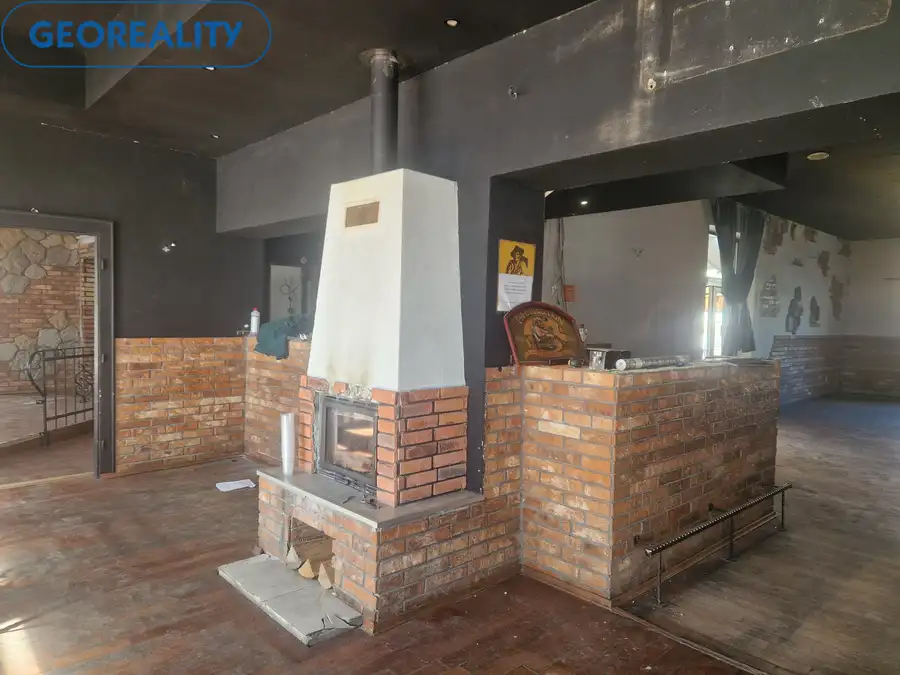
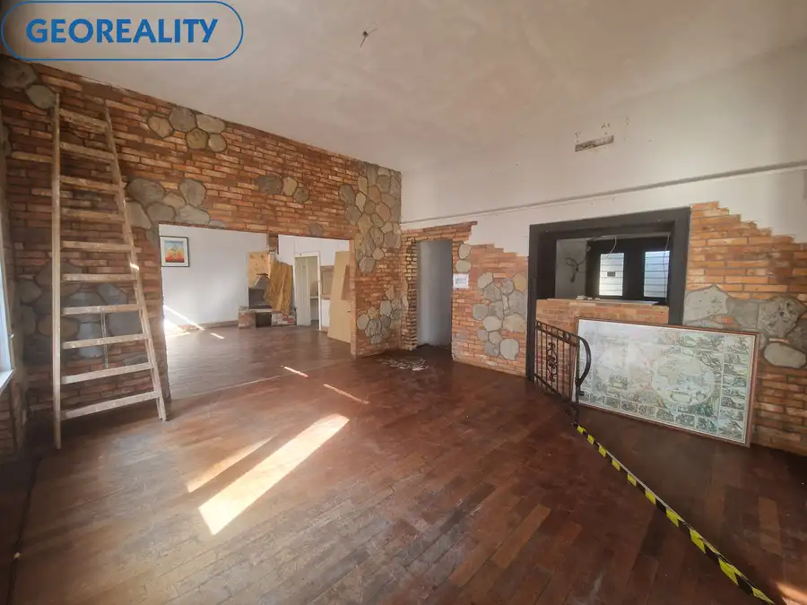
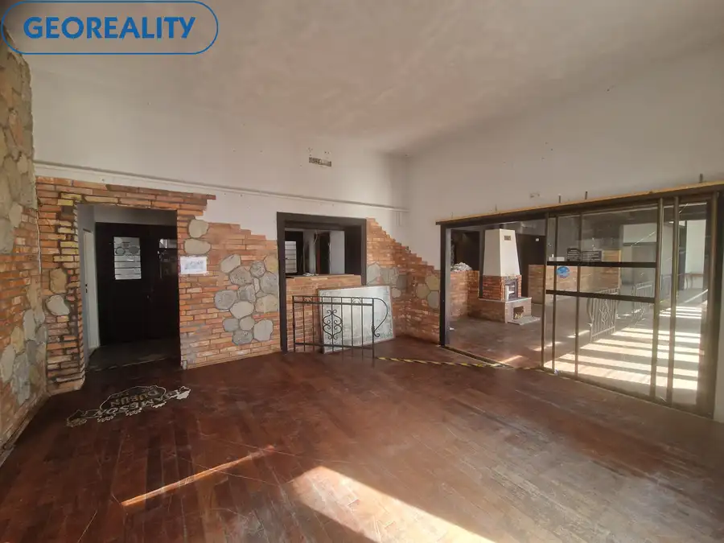
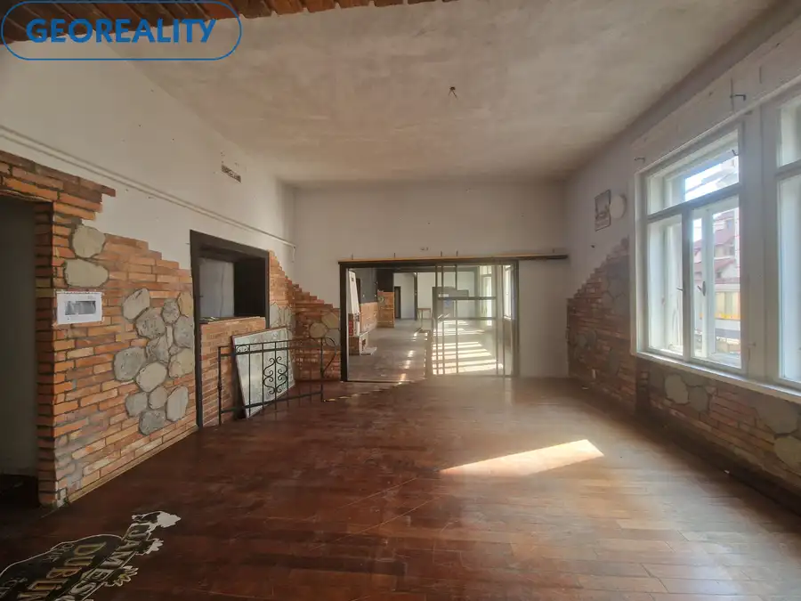
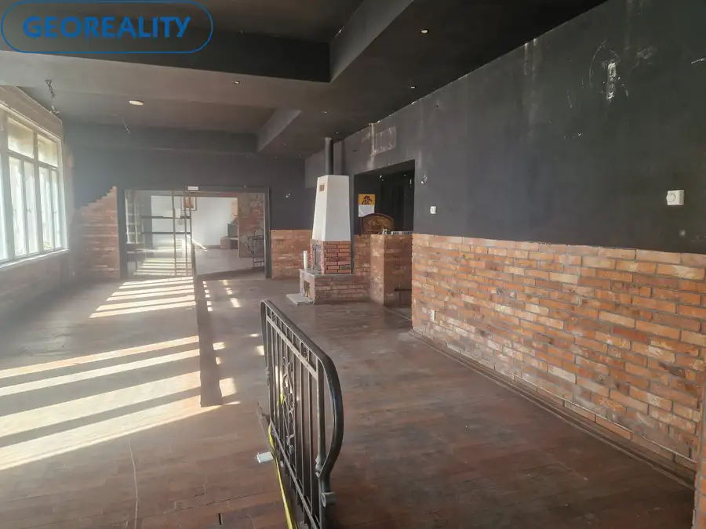
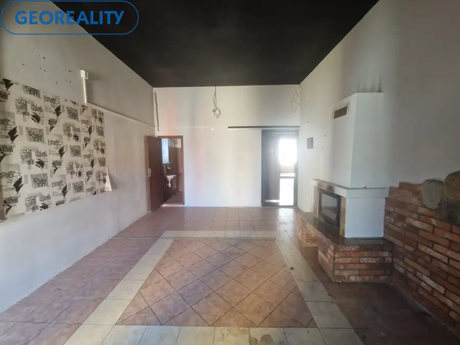
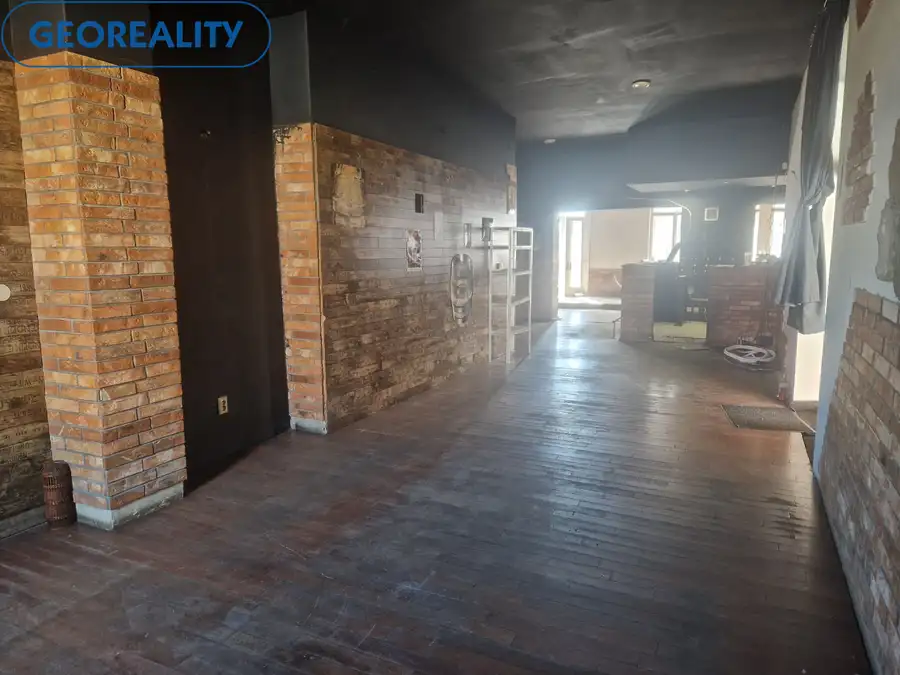
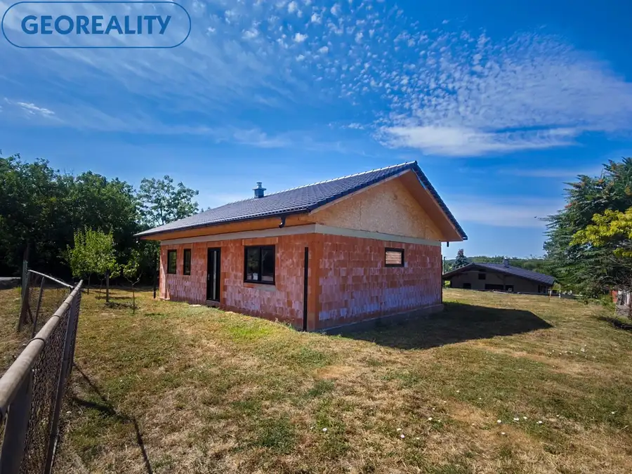
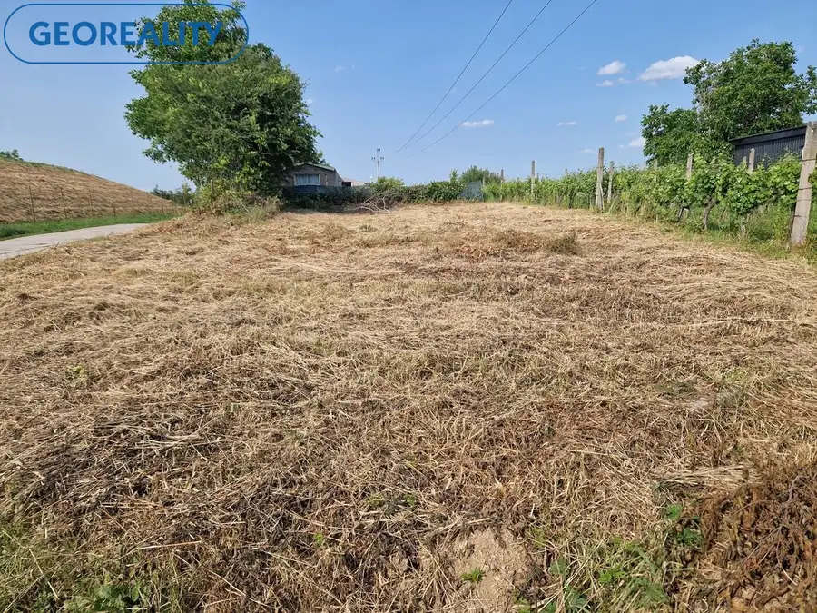
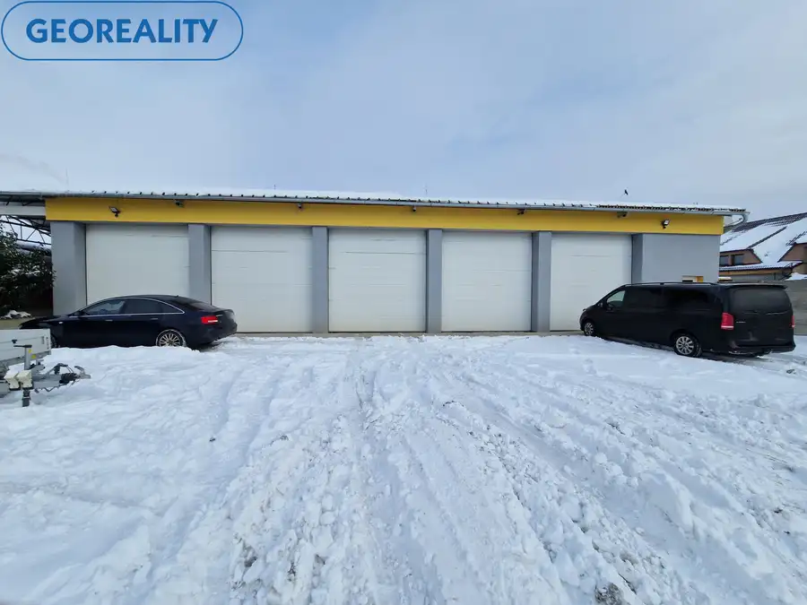

Podnikateľský priestor - Reštaurácia - Bar na prenájom Levice- centrum.
Levice







- Plocha240 m²
- StavČiastočná rekonštrukcia
- VlastníctvoOsobné
O nehnuteľnosti
IBA U NÁS ponúkame na prenájom podnikateľské priestory v úplnom centre mesta Levice s rozlohou približne 240 m2 .Jedná sa o bývalú prevádzku reštaurácie a baru.Nachádza sa tu kuchyňa so suchým skladom, veľká miestnosť pre hostí s barom a výčapom a krbom, ktorá je čiastočne predelená na 3 časti, ďalej samostatný VIP salón s krbom, balkónom a samostatným WC, ďalej veľká vstupná hala, veľká vonkajšia terasa. WC pre zákazníkov je zvlášť pre mužov a zvlášť pre ženy.V objekte je zavedená mestská voda, elektrina a plyn so samostatnými meračmi energií.Cena nájmu je 1 500,- eur / mesiac + energie.Bližšie informácie poskytnem na tel. čísle 0915 716 950, mailom: suchal@georealitylv.sk, alebo priame na obhliadke.Ak vás moja ponuka zaujala, neváhajte ma kontaktovať, dohodneme si obhliadku na ktorej vám nehnuteľnosť rád ukážem. Využite naše služby a pridajte sa do veľkej skupiny našich spokojných klientov. Tiež vás pozývame na IG georealitylv, na našu FB stránku: Georeality Levice - realitná kancelária, kde môžete pozorne sledovať našu každodennú prácu a tiež na: www.georealitylv.sk
Parametre
- Doprava
- Diaľkový autobus, MHD, Vlak, Cesta
- Druh
- Reštaurácia
- Dátum zverejnenia
- 05. 10. 2026
- Elektrina
- Na pozemku - 230 V
- Energetický certifikát budovy
- nie je
- Energie
- 1
- Odpadové vody
- Na pozemku - Kanalizácia
- Plyn
- Na pozemku
- Počet nadzemných podlaží
- 3
- Prístupová komunikácia
- Asfaltová
- Stav nehnuteľnosti
- Čiastočná rekonštrukcia
- Telekomunikácie
- Internet
- Typ
- Prenájom
- Typ konštrukcie
- Zmiešaná
- Vlastníctvo
- Osobné
- Voda
- Na pozemku - Diaľkový vodovod
- Vybavenie
- Vonkajšie parkovacie miesto, Technická miestnosť
- Vybavenie objektu
- Holopriestor
- Vykurovanie
- Krb
- Zastavaná plocha
- 240 m²
- Zdroj tepla
- Kombinovaný
- Úžitková plocha
- 240 m²
Kde to je


Mohlo by Vás zaujímať

DomNové 95 000 €EXKLUZÍVNE | Rozostavaný rodinný dom v obci Zbrojníky – dokončite si bývanie podľa vlastných predstáv Zbrojníky 80 m²
PozemokNové 33 000 €Pozemok na výstavbu rekreačnej chaty Levice Levice 500 m²
Komerčné priestoryNové 2 000 €Hala na prenájom vhodná na podnikateľské účely -Levice Levice 300 m²